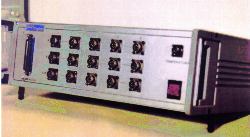

PTE ELETTRONICA ha operato dal 1979 al 2009 nel campo della
progettazione e realizzazione di sistemi per l'acquisizione e
l'elaborazione di dati scientifici.
Questa esperienza � ora disponibile per consulenze personali relative
alla realizzazione di apparecchiature scientifiche e didattiche e alla
gestione del relativo supporto logistico con particolare riferimento
alla documentazione tecnica.
Audio